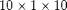
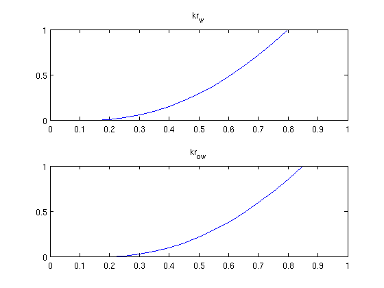
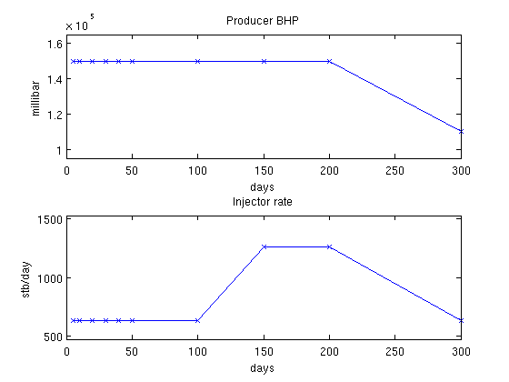
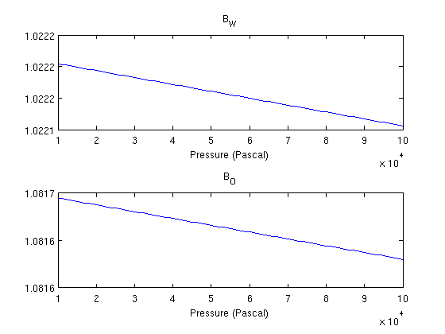
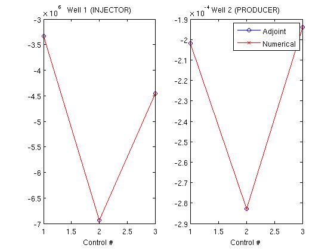
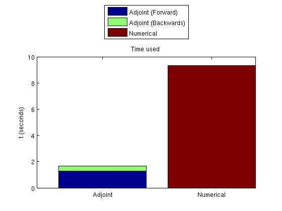

Contents
- Read the problem from a deckfile
- Visualize the fluid properties (Relative permeability)
- Show the schedules
- Visualize fluid properties (B)
- Compute constants
- Set up reservoir
- Run the whole schedule
- Create objective functions
- Compute derivatives using the adjoint formulation
- Find gradients numerically
- Plot the gradients
- Plot the time taken
Read the problem from a deckfile
The problem is defined in 'INPUT_NUMGRAD.DATA' which is a simple  Cartesian grid with uniform permeability. We read the deck and create the grid, rock and fluid structures from the resulting output. This requires the deckformat module.
require deckformat current_dir = fileparts(mfilename('fullpath')); fn = fullfile(current_dir, 'simple10x1x10.data'); deck = readEclipseDeck(fn); % Convert to MRST units (SI) deck = convertDeckUnits(deck); % Create grid G = initEclipseGrid(deck); % Set up the rock structure rock = initEclipseRock(deck); rock = compressRock(rock, G.cells.indexMap); % Create fluid fluid = initDeckADIFluid(deck); % Get schedule schedule = deck.SCHEDULE; % Enable this to get convergence reports when solving schedules verbose = false;
Visualize the fluid properties (Relative permeability)
While the geometry is trivial, we can examine the fluid properties. We do this by creating a vector containing the whole range of saturation values and sampling the functions contained in the fluid object.
s = 0:0.05:1; clf; subplot(2,1,1) plot(s, fluid.krW(s)) title('kr_w') subplot(2,1,2) plot(s, fluid.krOW(s)) title('kr_{ow}')
Show the schedules
There are three different well setups in the schedule. We are interested in the gradient based on these wells. We convert the timesteps to days to get better plots and visualize the controls for all the timesteps to show timescales.
inj = vertcat(schedule.control.WCONINJE) %#ok intentional display prod = vertcat(schedule.control.WCONPROD) %#ok intentional display timesteps = convertTo(cumsum(schedule.step.val), day); controls = schedule.step.control; % Extract rates and pressures rates = convertTo([inj{:, 5}], stb/day); pressures = convertTo([prod{:, 9}], milli*barsa); % Plot pressures and rates in each timestep. clf; subplot(2,1,1) plot(timesteps, pressures(controls), '-x') title('Producer BHP'); ylabel('millibar') xlabel('days') axis(axis() + [0 0 -.1*max(pressures) .1*max(pressures)]) subplot(2,1,2) plot(timesteps, rates(controls), '-x') title('Injector rate'); ylabel('stb/day') xlabel('days') % Adjust the axis a bit axis(axis() + [0 0 -.1*max(rates) .1*max(rates)])
inj =
'INJECTOR' 'WATER' 'OPEN' 'RATE' [0.0012] [Inf] [NaN] [Inf] [0] [0]
'INJECTOR' 'WATER' 'OPEN' 'RATE' [0.0023] [Inf] [NaN] [Inf] [0] [0]
'INJECTOR' 'WATER' 'OPEN' 'RATE' [0.0012] [Inf] [NaN] [Inf] [0] [0]
prod =
'PRODUCER' 'OPEN' 'BHP' [Inf] [Inf] [Inf] [Inf] [Inf] [15000000] [0] [0] [0]
'PRODUCER' 'OPEN' 'BHP' [Inf] [Inf] [Inf] [Inf] [Inf] [15000000] [0] [0] [0]
'PRODUCER' 'OPEN' 'BHP' [Inf] [Inf] [Inf] [Inf] [Inf] [11000000] [0] [0] [0]
 Visualize fluid properties (B)
B_O and B_W relate surface volumes of the fluids to reservoir conditions. Since we are not dealing with a gas phase, the volume ratio between surface and reservoir conditions is not very significant.
p = 0.1*barsa:10*milli*barsa:1*barsa; clf; subplot(2,1,1) plot(p, fluid.BW(p)) title('B_W') xlabel('Pressure (Pascal)') subplot(2,1,2) plot(p, fluid.BO(p)) title('B_O') xlabel('Pressure (Pascal)')
Compute constants
Once we are happy with the grid and rock setup, we compute transmissibilities. For this we first need the centroids.
G = computeGeometry(G); T = computeTrans(G, rock);
Set up reservoir
We turn on gravity and set up reservoir and scaling factors.
gravity on
state = initResSol(G, deck.PROPS.PVCDO(1), [.15, .85]);
scalFacs.pressure = 100*barsa;
scalFacs.rate = 100/day;
Run the whole schedule
This is done to get values for the wells for all timesteps. Since the case is fairly small,
timer = tic;
system = initADISystem({'Oil', 'Water'}, G, rock, fluid);
[wellSols states] = runScheduleADI(state, G, rock, system, schedule);
t_forward = toc(timer);
Step 1 of 10 (Used 7 iterations) Step 2 of 10 (Used 4 iterations) Step 3 of 10 (Used 5 iterations) Step 4 of 10 (Used 4 iterations) Step 5 of 10 (Used 4 iterations) Step 6 of 10 (Used 4 iterations) Step 7 of 10 (Used 5 iterations) Step 8 of 10 (Used 5 iterations) Step 9 of 10 (Used 4 iterations) Step 10 of 10 (Used 5 iterations)
Create objective functions
We can then create objective functions, which are here net profit worth. Since the adjoint formulation uses one forward run (runScheduleOW) to get the values for the objective function and one backward run (runAdjointOW) to get the gradients, we create an objective function based on the earlier solution. Since we will compare with the more computationally intensive numerical gradient, we also define an objective function which will be used for approximating the gradient of the objective function in a difference scheme.
objective_adjoint = @(tstep)NPVOW(G, wellSols, schedule, 'ComputePartials', true, 'tStep', tstep); objective_numerical = @(wellSols)NPVOW(G, wellSols, schedule);
Compute derivatives using the adjoint formulation
We pass in the objective function of the previous run. The objective function had a cost equal to one simulation for each timestep. The backward simulation requires one simulation per timestep, for a total of two simulations per timestep in the schedule to find the gradient. Note that the reverse timesteps are much cheaper to compute because only one iteration is required per timestep since the system is linear. Because the setup in this example is relatively small, we store the states in memory and input them as a keyword argument. If the forward simulation would be too big to store in full in memory, it can be saved to disk by running runScheduleOW with the 'writeOutput' parameter set to true. runAdjointOW will then read the files if not supplied with forward simulations directly. ('ForwardStates' not supplied or empty)
timer = tic; getEquations = @eqsfiOWExplicitWells; adjointGradient = runAdjointADI(G, rock, fluid, schedule, objective_adjoint, system, 'Verbose', verbose, 'ForwardStates', states); t_adjoint = toc(timer);
Find gradients numerically
To find the numerical gradients we need to solve each timestep three times: Once for the baseline value in the actual timestep, and once for each of the two wells to compute the derivative of the objective function based on that well.
timer = tic; numericalGradient = computeNumGrad(state, G, rock, system, schedule, objective_numerical, 'scaling', scalFacs, 'Verbose', verbose); t_gradient = toc(timer);
Step 1 of 10 (Used 7 iterations) Step 2 of 10 (Used 4 iterations) Step 3 of 10 (Used 5 iterations) Step 4 of 10 (Used 4 iterations) Step 5 of 10 (Used 4 iterations) Step 6 of 10 (Used 4 iterations) Step 7 of 10 (Used 5 iterations) Step 8 of 10 (Used 5 iterations) Step 9 of 10 (Used 4 iterations) Step 10 of 10 (Used 5 iterations) Step 1 of 10 (Used 7 iterations) Step 2 of 10 (Used 4 iterations) Step 3 of 10 (Used 5 iterations) Step 4 of 10 (Used 4 iterations) Step 5 of 10 (Used 4 iterations) Step 6 of 10 (Used 4 iterations) Step 7 of 10 (Used 5 iterations) Step 8 of 10 (Used 5 iterations) Step 9 of 10 (Used 4 iterations) Step 10 of 10 (Used 5 iterations) Step 1 of 10 (Used 7 iterations) Step 2 of 10 (Used 4 iterations) Step 3 of 10 (Used 5 iterations) Step 4 of 10 (Used 4 iterations) Step 5 of 10 (Used 4 iterations) Step 6 of 10 (Used 4 iterations) Step 7 of 10 (Used 5 iterations) Step 8 of 10 (Used 5 iterations) Step 9 of 10 (Used 4 iterations) Step 10 of 10 (Used 5 iterations) Step 1 of 10 (Used 7 iterations) Step 2 of 10 (Used 4 iterations) Step 3 of 10 (Used 5 iterations) Step 4 of 10 (Used 4 iterations) Step 5 of 10 (Used 4 iterations) Step 6 of 10 (Used 4 iterations) Step 7 of 10 (Used 5 iterations) Step 8 of 10 (Used 5 iterations) Step 9 of 10 (Used 4 iterations) Step 10 of 10 (Used 5 iterations) Step 1 of 10 (Used 7 iterations) Step 2 of 10 (Used 4 iterations) Step 3 of 10 (Used 5 iterations) Step 4 of 10 (Used 4 iterations) Step 5 of 10 (Used 4 iterations) Step 6 of 10 (Used 4 iterations) Step 7 of 10 (Used 5 iterations) Step 8 of 10 (Used 5 iterations) Step 9 of 10 (Used 4 iterations) Step 10 of 10 (Used 5 iterations) Step 1 of 10 (Used 7 iterations) Step 2 of 10 (Used 4 iterations) Step 3 of 10 (Used 5 iterations) Step 4 of 10 (Used 4 iterations) Step 5 of 10 (Used 4 iterations) Step 6 of 10 (Used 4 iterations) Step 7 of 10 (Used 5 iterations) Step 8 of 10 (Used 5 iterations) Step 9 of 10 (Used 4 iterations) Step 10 of 10 (Used 5 iterations) Step 1 of 10 (Used 7 iterations) Step 2 of 10 (Used 4 iterations) Step 3 of 10 (Used 5 iterations) Step 4 of 10 (Used 4 iterations) Step 5 of 10 (Used 4 iterations) Step 6 of 10 (Used 4 iterations) Step 7 of 10 (Used 5 iterations) Step 8 of 10 (Used 5 iterations) Step 9 of 10 (Used 4 iterations) Step 10 of 10 (Used 5 iterations)
Plot the gradients
We find the gradient for each well and for each unique well setup in the schedule. There are three distinct well setups in the current schedule. The gradients are plotted per well with data points corresponding to the unique schedules, showing that they are visually indistinguishable.
wellNames = {wellSols{1}.name};
ga = cell2mat(adjointGradient);
gn = cell2mat(numericalGradient);
clf;
subplot(1,2,1)
plot(ga(1,:),'-ob'), hold on
plot(gn(1,:),'-xr')
title(['Well 1 (', wellNames{1}, ')'])
xlabel('Control #')
subplot(1,2,2)
plot(ga(2,:),'-ob'), hold on
plot(gn(2,:),'-xr'), hold on
title(['Well 2 (', wellNames{2}, ')'])
xlabel('Control #')
legend({'Adjoint', 'Numerical'})
 Plot the time taken
Since the adjoint formulation uses both a forward and a backward simulation, these must be plotted together.
clf; bar([t_forward, t_adjoint, 0; 0, 0, t_gradient], 'barlayout', 'stacked'); set(gca, 'XTickLabel', {'Adjoint', 'Numerical'}) legend('Adjoint (Forward)', 'Adjoint (Backwards)', 'Numerical', 'location', 'NorthOutside') ylabel('t (seconds)') title('Time used')